Tutorial 3: MacroEnergy.jl showcase
The interactive version of this tutorial can be found here, next to the multisector_3zone_csv case it uses.
The slides from the workshop's introductory talks, on energy-system optimization models and MACRO and on technology parameterization, are in macro_workshop_intro.pdf.
A multisector energy system, from CSV inputs to insights
Three zones of the US Eastern Interconnection (SE, MIDAT, NE), where electricity, hydrogen, natural gas, liquid fuels, biomass and CO₂ are planned and operated together: first with no climate policy, then under a CO₂ cap.
| Section | What it shows | |
|---|---|---|
| 1 | Inputs | Every asset is one row of a spreadsheet-like file |
| 2 | Inside the System | The graph Macro builds, and representative weeks |
| 3 | Solve | One call to run_case, and the run-status file |
| 4 | Results | Capacity, sector coupling, dispatch, prices and costs, with no climate policy |
| 5 | Scenario | Adding the CO₂ cap: what changes, and the carbon balance |
Before you run: requirements
- Requirements: the development version of Macro (0.4), which is not registered yet. The first code cell installs MacroEnergy.jl from the
mainbranch of its repository, together with HiGHS, CSV, DataFrames and Plots. - Where files go: the case folder (
multisector_3zone_csv/, next to this notebook) is never modified. Each run works on a copy underruns/, and results are written inside that copy.
# Install the development version of Macro (0.4) and the packages used below into this folder's environment, as in the other tutorials.
using Pkg
Pkg.activate(".")
Pkg.add(name = "MacroEnergy", rev = "main")
Pkg.add(["HiGHS", "CSV", "DataFrames", "Plots"])
using MacroEnergy, HiGHS
using CSV, DataFrames, Plots
const ME = MacroEnergy # shorthand for MacroEnergy helpers that are not exported
const CASE = joinpath(@__DIR__, "multisector_3zone_csv")
const RUNS_DIR = joinpath(@__DIR__, "runs")
isdir(CASE) || error("Expected the case folder at $CASE")
ENV["DATAFRAMES_ROWS"] = 40
println("MacroEnergy ", pkgversion(MacroEnergy), " from ", pkgdir(MacroEnergy))Chart style and plotting helpers
# Chart style: light surface, hairline grid, thin marks.
gr()
const INK, INK2, HAIRLINE, SURFACE = "#0b0b0b", "#52514e", "#e1e0d9", "#fcfcfb"
default(size = (900, 420), fontfamily = "sans-serif", background_color = SURFACE,
titlefontsize = 12, titlefontcolor = INK, guidefontsize = 10, guidefontcolor = INK2,
tickfontsize = 9, tickfontcolor = INK2, legendfontsize = 9, legendfontcolor = INK2,
foreground_color_legend = nothing, background_color_legend = SURFACE,
framestyle = :axes, foreground_color_axis = HAIRLINE, foreground_color_border = HAIRLINE,
grid = :y, foreground_color_grid = HAIRLINE, gridalpha = 1, gridlinewidth = 0.5,
linewidth = 2, margin = 4Plots.mm, legend = :outerright,
plot_title = " ", plot_titlevspan = 0.04) # blank figure title: leaves room above every chart title
# Electricity technology groups. Colors follow the group in every chart, and this order is the
# stacking order (bottom → top), checked for colorblind-safe contrast between neighbours.
const TECH_ORDER = ["Nuclear", "Hydro", "Natural gas", "Wind", "Other", "H₂ turbines", "Solar", "Battery"]
const TECH_COLORS = Dict(zip(TECH_ORDER, ["#4a3aa7", "#2a78d6", "#eb6834", "#1baf7a", "#008300", "#e87ba4", "#eda100", "#e34948"]))
const ZONES = ["SE", "MIDAT", "NE"]
const THREE = ["#2a78d6", "#eb6834", "#1baf7a"] # three-series palette (zones, representative weeks)
const ZONE_COLORS = Dict(zip(ZONES, THREE))
const BAR, NEUTRAL, REFERENCE = "#2a78d6", INK2, "#c3c2b7" # single-series bars; neutral lines; reference (existing / base) bars
const EMIT, REMOVE = "#e34948", "#2a78d6" # diverging poles for the CO₂ balance
"Format a number with thousands separators, e.g. 1159.04 → \"1,159\"."
function fmt(x; digits = 0)
r = round(abs(x); digits)
whole = floor(Int, r)
s = reverse(join(Iterators.partition(reverse(string(whole)), 3), ","))
digits > 0 && (s *= "." * lpad(string(round(Int, (r - whole) * 10^digits)), digits, '0'))
return (x < 0 ? "−" : "") * s
end
"""
Horizontal bars, largest at the top, each labelled with its value. There is no x axis, since every bar carries
its number. `xmax` and `rows` give side-by-side panels one shared scale and row height; `ref` draws a labelled
vertical reference line.
"""
function hbar(labels, values; colors = fill(BAR, length(values)), title = "", digits = 0, unit = "",
xmax = nothing, rows = nothing, ref = nothing, ref_label = "")
o = sortperm(values)
labels, values, colors = labels[o], values[o], colors[o]
n = length(values)
rows = something(rows, n)
y = (1:n) .+ (rows - n) # bars aligned to the top row
lo, hi = min(0, minimum(values)), something(xmax, max(0, maximum(values)))
pad = 0.18 * (hi - lo) # room for the value labels
p = bar(y, values; orientation = :h, color = colors, linewidth = 0, bar_width = 0.62, legend = false)
lo < 0 && vline!(p, [0]; subplot = 1, color = REFERENCE, linewidth = 1)
if !isnothing(ref)
vline!(p, [ref]; subplot = 1, color = "#898781", linewidth = 1)
annotate!(p, ref, rows + 0.8, text(ref_label * " ", 8, INK2, :right); subplot = 1)
end
gap = 0.012 * (hi - lo)
for (i, v) in enumerate(values)
annotate!(p, v + (v < 0 ? -gap : gap), y[i], text(fmt(v; digits) * unit, 9, INK, v < 0 ? :right : :left); subplot = 1)
end
# With orientation = :h, Plots needs both axis limits set after the bars are drawn.
# `subplot = 1` is the chart itself; the blank figure title (see `default` above) is a second subplot.
plot!(p; subplot = 1, xlims = (lo < 0 ? lo - pad : 0, hi + pad), ylims = (0.4, rows + (isnothing(ref) ? 0.6 : 1.2)),
yticks = (y, labels), ytickfontsize = 10, ytickfontcolor = INK, xticks = false,
framestyle = :grid, grid = false, title, titlelocation = :left, size = (900, 80 + 30 * rows))
end
"Paired horizontal bars per category (top → bottom in the given order): a grey reference bar and a colored bar, both labelled. Values can be negative."
function hbar_pair(labels, ref_values, values; colors, ref_label, label, title = "", digits = 0, unit = "")
n = length(labels)
lo, hi = min(0, minimum(vcat(ref_values, values))), max(0, maximum(vcat(ref_values, values)))
pad, gap = 0.16 * (hi - lo), 0.012 * (hi - lo)
p = bar((1:n) .- 0.19, ref_values; orientation = :h, bar_width = 0.36, linewidth = 0, color = REFERENCE, label = ref_label)
bar!(p, (1:n) .+ 0.19, values; subplot = 1, orientation = :h, bar_width = 0.36, linewidth = 0, color = colors, label = label)
lo < 0 && vline!(p, [0]; subplot = 1, color = REFERENCE, linewidth = 1, label = false)
at(v) = v < 0 ? (v - gap, :right) : (v + gap, :left) # label position and alignment for a bar ending at v
for i in 1:n
(x, h) = at(ref_values[i]); annotate!(p, x, i - 0.19, text(fmt(ref_values[i]; digits), 8, INK2, h); subplot = 1)
(x, h) = at(values[i]); annotate!(p, x, i + 0.19, text(fmt(values[i]; digits) * unit, 9, INK, h); subplot = 1)
end
plot!(p; subplot = 1, xlims = (lo < 0 ? lo - pad : 0, hi + pad), ylims = (0.4, n + 0.6), yticks = (1:n, labels), ytickfontsize = 10, ytickfontcolor = INK,
yflip = true, xticks = false, framestyle = :grid, grid = false, legend = :outertop, legend_columns = 2,
title, titlelocation = :left, size = (900, 130 + 44 * n))
endSetup helpers
Every run below works on a fresh copy of the case under runs/, so its inputs can be edited freely.
CO2_PENALTY sets the price of the soft CO₂ cap in the capped run (section 5). Lower it (e.g. to 200) and re-run to see a less aggressive system.
Setup helpers
CO2_PENALTY = 1000.0 # $/t for net emissions above the cap
"Fresh copy of the case at runs/<name>."
function fresh_copy(name)
dir = joinpath(RUNS_DIR, name)
rm(dir; force = true, recursive = true)
mkpath(RUNS_DIR)
cp(CASE, dir)
for f in readdir(dir)
(startswith(f, "results") || endswith(f, ".log") || f == "run_status.json") && rm(joinpath(dir, f); recursive = true)
end
return dir
end
"Edit one asset CSV of a case: `f(df)` mutates the table, which is written back."
function edit_csv!(f, dir, file)
path = joinpath(dir, "assets", file)
df = CSV.read(path, DataFrame)
f(df)
CSV.write(path, df)
return df
end
"Edit a JSON input file of a case: `f(data)` mutates the parsed Dict, which is written back."
function edit_json!(f, dir, file)
path = joinpath(dir, file)
data = ME.JSON3.read(read(path, String), Dict{String,Any})
f(data)
open(io -> ME.JSON3.pretty(io, data), path, "w")
return data
end
"""
A working copy of the case with the notebook's output settings. With `co2_cap = true` (the case as shipped), the CO₂ cap
on `co2_sink` stays and its penalty is set to `CO2_PENALTY`; with `co2_cap = false`, the cap is removed.
"""
function prepare_case(name; co2_cap = true)
dir = fresh_copy(name)
edit_json!(dir, joinpath("system", "nodes.json")) do nodes
for block in nodes["nodes"], node in block["instance_data"]
node["id"] == "co2_sink" || continue
if co2_cap
node["price_unmet_policy"] = Dict("CO2CapConstraint" => CO2_PENALTY)
else
node["constraints"]["CO2CapConstraint"] = false
delete!(node, "rhs_policy")
delete!(node, "price_unmet_policy")
end
end
end
edit_json!(dir, joinpath("settings", "macro_settings.json")) do settings
settings["OverwriteResults"] = true # results go to <case>/results, without a _001 suffix
end
return dir
end1. Inputs
A case is a folder of plain files: every asset is a row in a CSV file, and every commodity network is a set of nodes in JSON.
multisector_3zone_csv/
├── system_data.json ← index: paths to all the rest
├── assets/ ← 29 CSV files, one row per asset
├── system/
│ ├── commodities.json ← commodities, sub-commodities
│ ├── locations.json ← zones
│ ├── nodes.json ← supply, demand, policies
│ ├── time_data.json ← time steps, representative weeks
│ └── *.csv ← demand, availability, fuel prices
└── settings/
└── macro_settings.jsonsystem_data.json in full
{
"commodities": { "path": "system/commodities.json" },
"locations": { "path": "system/locations.json" },
"settings": { "path": "settings/macro_settings.json" },
"assets": { "path": "assets" },
"time_data": { "path": "system/time_data.json" },
"nodes": { "path": "system/nodes.json" }
}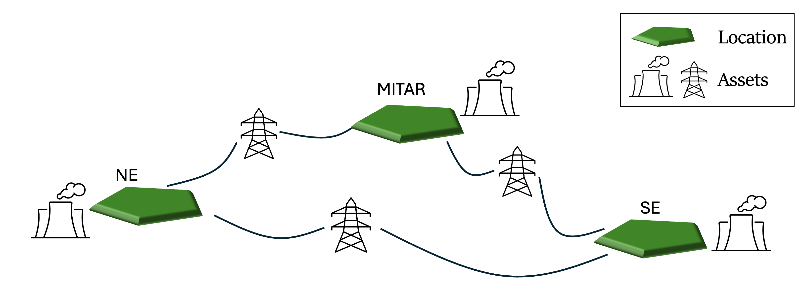
Asset CSVs: one row per asset
system_data.json points Macro at the assets/ folder, and Macro loads every .json and .csv file in it. For example, here is the file for natural-gas power plants:
thermal = CSV.read(joinpath(CASE, "assets/naturalgas_power.csv"), DataFrame)
select!(thermal, :Type, :id, :location, :existing_capacity, :fuel_consumption, :emission_rate, :can_retire, :can_expand, :annualized_investment_cost, :fixed_om_cost, :variable_om_cost, :min_up_time, :min_down_time, :ramp_down_fraction, :)
first(thermal, 5)5×28 DataFrame
Row │ Type id location existing_capacity fuel_consumption emission_rate can_retire can_expand annualized_investment_cost fixed_om_cost variable_om_cost min_up_time min_down_time ramp_down_fraction
─────┼────────────────────────────────────────────────────────────────────────────────────────────────────────────────────────────────────────────────────────────────────────────────────────────────────────────────────────────────────────────────────────────────
1 │ ThermalPower MIDAT_natural_gas_fired_combined_cycle_1 MIDAT 4026.4 2.24961 0.181048 missing false 0.0 16001.0 4.415 6 6 0.64
2 │ ThermalPower MIDAT_natural_gas_fired_combined_cycle_2 MIDAT 31802.9 2.00255 0.181048 missing false 0.0 11965.0 3.452 6 6 0.64
3 │ ThermalPower MIDAT_natural_gas_fired_combined_cycle_3 MIDAT 1697.7 3.59862 0.181048 true false 0.0 11069.1 3.505 6 6 0.64
4 │ ThermalPower MIDAT_natural_gas_fired_combined_cycle_4 MIDAT 20288.5 2.10132 0.181048 true false 0.0 9496.0 3.504 6 6 0.64
5 │ ThermalPower MIDAT_natural_gas_fired_combustion_turbine_1 MIDAT 14508.8 3.44388 0.181048 true false 0.0 9573.46 5.071 1 1 0.64
14 columns omittedIn each CSV file:
Typeandidare required.Typeis the asset type (ThermalPower,Electrolyzer,VRE, …),idis a unique identifier for the asset.- Every other column is a property: where it is (
location), what it costs (annualized_investment_cost,fixed_om_cost), how big it is or can get (existing_capacity,max_capacity), how it performs (efficiency_rate,fuel_consumption), and so on. --expresses nesting.elec_constraints--CapacityConstraint = trueswitches on a constraint, andavailability--timeseries--path/--headerpoint to a column of a time-series CSV.- Empty cells fall back to the asset's defaults, so rows in one file don't need identical columns.
The following is an example for the variable renewable energy resources (note the availability column):
vre = CSV.read(joinpath(CASE, "assets/vre.csv"), DataFrame)
select!(vre, :Type, :id, :location, :annualized_investment_cost, :fixed_om_cost, Symbol("availability--timeseries--path"), Symbol("availability--timeseries--header"), Not(:existing_capacity, :elec_can_expand, :elec_can_retire))
first(vre, 5)5×10 DataFrame
Row │ Type id location annualized_investment_cost fixed_om_cost availability--timeseries--path availability--timeseries--header
─────┼─────────────────────────────────────────────────────────────────────────────────────────────────────────────────────────────────────────────────────────────────────────────────────────────
1 │ VRE NE_offshorewind_class10_moderate_floating_1_1 NE 1.7383e5 57294.4 system/availability.csv NE_offshorewind_class10_moderate_floating_1_1
2 │ VRE SE_utilitypv_class1_moderate_70_0_2_1 SE 40649.0 13510.2 system/availability.csv SE_utilitypv_class1_moderate_70_0_2_1
3 │ VRE SE_utilitypv_class1_moderate_70_0_2_2 SE 39383.7 13510.2 system/availability.csv SE_utilitypv_class1_moderate_70_0_2_2
4 │ VRE SE_utilitypv_class1_moderate_70_0_2_3 SE 40720.2 13510.2 system/availability.csv SE_utilitypv_class1_moderate_70_0_2_3
5 │ VRE SE_utilitypv_class1_moderate_70_0_2_4 SE 42820.6 13510.2 system/availability.csv SE_utilitypv_class1_moderate_70_0_2_4
3 columns omittedHere are all the assets in the system, file by file:
asset_files = filter(endswith(".csv"), readdir(joinpath(CASE, "assets")))
inventory = DataFrame(file = String[], Type = String[], assets = Int[], columns = Int[])
for f in asset_files
df = CSV.read(joinpath(CASE, "assets", f), DataFrame)
push!(inventory, (f, join(unique(df.Type), ", "), nrow(df), ncol(df)))
end
println(length(asset_files), " CSV files describe ", sum(inventory.assets), " assets of ", length(unique(inventory.Type)), " types")
inventory29 CSV files describe 215 assets of 23 types
29×4 DataFrame
Row │ file Type assets columns
─────┼─────────────────────────────────────────────────────────────────────────
1 │ beccs_electricity.csv BECCSElectricity 6 17
2 │ beccs_gasoline.csv BECCSGasoline 6 18
3 │ beccs_hydrogen.csv BECCSHydrogen 6 18
4 │ beccs_liquid_fuels.csv BECCSLiquidFuels 12 23
5 │ beccs_naturalgas.csv BECCSNaturalGas 12 17
6 │ co2_injection.csv CO2Injection 12 7
7 │ electricdac.csv ElectricDAC 3 13
8 │ electricity_stor.csv Battery 6 28
9 │ electrolyzer.csv Electrolyzer 3 14
10 │ h2gas_power_ccgt.csv ThermalPower 3 26
11 │ h2gas_power_ocgt.csv ThermalPower 3 22
12 │ h2pipelines.csv GasStorage 4 27
13 │ h2storage.csv GasStorage 3 27
14 │ hydropower.csv HydroRes 3 28
15 │ liquid_fuels_end_use.csv FuelsEndUse 9 7
16 │ liquid_fuels_fossil_upstream.csv FossilFuelsUpstream 9 7
17 │ mustrun.csv MustRun 3 10
18 │ natgasdac.csv NaturalGasDAC 3 17
19 │ naturalgas_end_use.csv FuelsEndUse 3 9
20 │ naturalgas_fossil_upstream.csv FossilFuelsUpstream 3 8
21 │ naturalgas_h2.csv ThermalHydrogen 3 26
22 │ naturalgas_h2_ccs.csv ThermalHydrogenCCS 6 27
23 │ naturalgas_power.csv ThermalPower 24 28
24 │ naturalgas_power_ccs.csv ThermalPowerCCS 3 27
25 │ nuclear_power.csv ThermalPower 9 28
26 │ powerlines.csv TransmissionLink 2 11
27 │ synthetic_liquid_fuels.csv SyntheticLiquidFuels 3 20
28 │ synthetic_naturalgas.csv SyntheticNaturalGas 3 15
29 │ vre.csv VRE 50 13println("Total number of assets: ", sum(inventory.assets))Existing plants vs. new-build candidates
In the nuclear_power.csv file, we can notice that we have two types of nuclear plants (the table is transposed, so each plant is a column):
SE_nuclear_1is an existing plant: it can't expand and has noannualized_investment_cost(an empty cell).SE_nuclear_mid_0is a new-build candidate: it starts at zero capacity and can expand.
"Transpose a table so each row becomes a column (easier to read wide asset files)."
function transposed(df)
out = DataFrame(field = names(df))
for r in eachrow(df)
out[!, string(r.id)] = [ismissing(x) ? "" : string(x) for x in r]
end
return out
end
nuclear = CSV.read(joinpath(CASE, "assets", "nuclear_power.csv"), DataFrame)
select!(nuclear, :Type, :id, :can_retire, :can_expand, :existing_capacity, :annualized_investment_cost, :)
transposed(nuclear[in(["SE_nuclear_1", "SE_nuclear_mid_0"]).(nuclear.id), :])28×3 DataFrame
Row │ field SE_nuclear_1 SE_nuclear_mid_0
─────┼────────────────────────────────────────────────────────────────────────────
1 │ Type ThermalPower ThermalPower
2 │ id SE_nuclear_1 SE_nuclear_mid_0
3 │ can_retire true true
4 │ can_expand false true
5 │ existing_capacity 33632.288 0.0
6 │ annualized_investment_cost 231096.9481
22 rows omittedThe can_expand and can_retire parameters allow the model to build new capacity and to retire existing capacity; set them to false to prevent either.
A new asset from a template
Starting a new asset from scratch is one call. template_asset writes a CSV with every simple-style column for that type, already filled with defaults:
template_dir = mktempdir()
template_asset(template_dir, Electrolyzer; style = "simple", format = "csv")
CSV.read(joinpath(template_dir, "Electrolyzer.csv"), DataFrame)1×18 DataFrame
Row │ Type id location can_expand can_retire existing_capacity capacity_size efficiency_rate investment_cost fixed_om_cost
─────┼──────────────────────────────────────────────────────────────────────────────────────────────────────────────────────────────────────────────────
1 │ Electrolyzer Electrolyzer missing true true 0.0 1.0 0.0 0.0 0.0
8 columns omittedEach user can then modify the properties, add new rows, etc. Always remember to have unique ids for each asset.
What an asset row doesn't say
The gas-plant rows say where each plant is, how big it is and how efficient. They don't say what the plant is connected to: there's no pipeline column and no grid connection for now.
That's deliberate: in Macro, assets never connect to each other. Back to the map from the start: between the assets, there's a layer we haven't seen yet.
Nodes: where commodities meet
That layer is nodes. Think of a node as a market for one commodity in one place: the SE electricity market, the SE gas market. Assets are the traders: a gas plant buys in the gas market and sells in the electricity market.
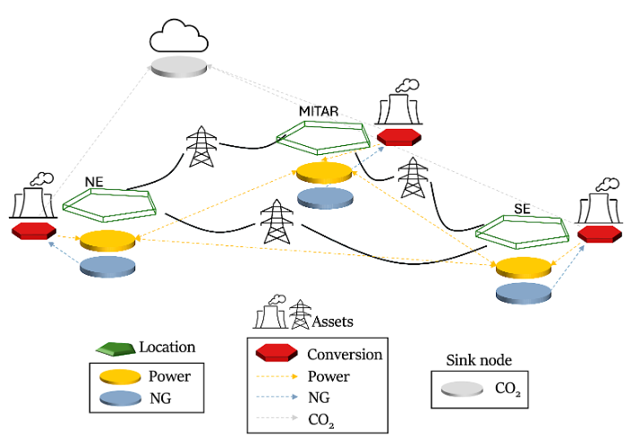
The same map, now with nodes between the assets (only a few per zone, for simplicity).
- Every market clears every hour: what flows in (production, imports, purchases) equals what flows out (consumption, exports, demand).
- Each commodity has its own nodes in each zone:
elec_SE,h2_SE,natgas_SE,gasoline_SE,co2_captured_SE, and more. Fuels have three per zone: where the fuel is bought, a hub, and where it's used. - The atmosphere,
co2_sink, is the exception. It belongs to no zone and has no hourly balance: it adds up what's emitted and removed, and the CO₂ cap applies to that total.
How assets find their nodes
Each edge of an asset is a plug for one commodity, and each node is a socket for one commodity in one zone. The asset's location picks the zone; the commodity picks the socket.
A gas plant with location = SE plugs its fuel edge into natgas_SE and its electricity edge into elec_SE. Nodes without a location are referenced by id instead, like the co2_sink column in many asset files, or fuel_start_vertex = uranium_source for nuclear plants.
(Advanced) Following one unit of gas
Here's how nodes and assets fit together along one supply chain: natural gas in SE.
- Bought at the supply node
natgas_fossil_SE, at the fuel price. - Moved by an upstream asset to the zone hub
natgas_SE. Bio-methane and synthetic methane arrive at the same hub, so they compete with fossil gas. - Used in one of two ways: an end-use asset delivers it to the demand node
natgas_demand_SE, or a plant burns it; a gas power plant, for example, sends its electricity toelec_SE.
Whichever asset burns the gas is charged its combustion CO₂: the end-use asset for gas demand, or the plant itself.
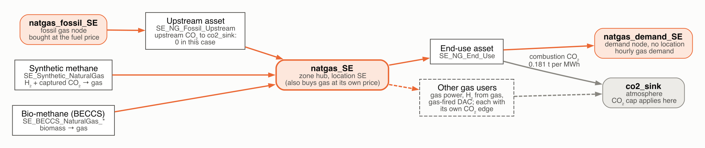
Natural gas in the SE zone. Rounded boxes are nodes, square boxes are assets; orange arrows carry gas, grey arrows carry CO₂. Gasoline, diesel and jet fuel follow the same pattern: supply node, hub, demand node.
nodes.json: supply, demand and policies
All of those nodes, and the demand, supply and policies they carry, are defined in system/nodes.json, in blocks. Each block has:
type: the commodity (Electricity,Hydrogen,NaturalGas,CO2, …)global_data: settings shared by every node in the blockinstance_data: one entry per node, each with a uniqueidand its own settings
A node can carry:
| What it is | In this case | |
|---|---|---|
| demand | an hourly time series the system must serve | elec_SE reads column Demand_MW_z1 of system/demand fuel.csv |
| supply | the commodity bought from outside the system at a price, optionally in segments with limits | biomass, fossil fuels, uranium |
| non-served demand | max_nsd and price_nsd let demand go unmet at a penalty | up to 100% of demand, at USD 5,000/MWh |
| policies | caps and limits | the CO₂ cap on co2_sink |
| location | the zone it belongs to | SE, MIDAT, NE |
nodes_json = ME.JSON3.read(read(joinpath(CASE, "system", "nodes.json"), String))
node_blocks = DataFrame(commodity = String[], nodes = Int[], ids = String[], sets = String[])
for block in nodes_json.nodes
fields = Set{Symbol}()
haskey(block, :global_data) && union!(fields, keys(block.global_data))
foreach(n -> union!(fields, keys(n)), block.instance_data)
sets = [string(f) for f in (:demand, :supply, :max_nsd, :rhs_policy, :price_unmet_policy) if f in fields]
ids = [string(n.id) for n in block.instance_data]
push!(node_blocks, (string(block.type), length(ids), length(ids) > 3 ? join(ids[1:2], ", ") * ", …" : join(ids, ", "), join(sets, ", ")))
end
node_blocks21×4 DataFrame
Row │ commodity nodes ids sets
─────┼─────────────────────────────────────────────────────────────────────────────────────────────────────────────────────────
1 │ Fossil_NaturalGas 3 natgas_fossil_SE, natgas_fossil_MIDAT, natgas_fossil_NE supply
2 │ NaturalGas 3 natgas_SE, natgas_MIDAT, natgas_NE supply
3 │ NaturalGas 3 natgas_demand_SE, natgas_demand_MIDAT, natgas_demand_NE demand
4 │ Uranium 1 uranium_source supply
5 │ Biomass_Wood 3 biowood_SE, biowood_MIDAT, biowood_NE supply
6 │ Biomass_Herb 3 bioherb_SE, bioherb_MIDAT, bioherb_NE supply
7 │ Electricity 3 elec_SE, elec_MIDAT, elec_NE demand, max_nsd
8 │ Hydrogen 3 h2_SE, h2_MIDAT, h2_NE demand, max_nsd
9 │ CO2 1 co2_sink rhs_policy, price_unmet_policy
10 │ CO2Captured 3 co2_captured_SE, co2_captured_MIDAT, co2_captured_NE demand
11 │ CO2Captured 12 co2_storage_SE_1, co2_storage_SE_2, … rhs_policy
12 │ Electricity 1 hydro_source
13 │ Fossil_Gasoline 3 gasoline_fossil_SE, gasoline_fossil_MIDAT, gasoline_fossil_NE supply
14 │ Gasoline 3 gasoline_SE, gasoline_MIDAT, gasoline_NE demand
15 │ Gasoline 3 gasoline_demand_SE, gasoline_demand_MIDAT, gasoline_demand_NE demand
16 │ Fossil_JetFuel 3 jetfuel_fossil_SE, jetfuel_fossil_MIDAT, jetfuel_fossil_NE supply
17 │ JetFuel 3 jetfuel_SE, jetfuel_MIDAT, jetfuel_NE demand
18 │ JetFuel 3 jetfuel_demand_SE, jetfuel_demand_MIDAT, jetfuel_demand_NE demand
19 │ Fossil_Diesel 3 diesel_fossil_SE, diesel_fossil_MIDAT, diesel_fossil_NE supply
20 │ Diesel 3 diesel_SE, diesel_MIDAT, diesel_NE demand
21 │ Diesel 3 diesel_demand_SE, diesel_demand_MIDAT, diesel_demand_NE demandPolicies live on nodes
The atmosphere node, co2_sink, carries the CO₂ cap:
rhs_policysets the cap: zero net emissions;price_unmet_policymakes it soft: emissions above the cap are allowed at USD 1,000 per tonne.
The first run switches the cap off, to see the system with no climate policy. Section 5 turns it back on.
ME.JSON3.pretty(stdout, only(n for block in nodes_json.nodes for n in block.instance_data if n.id == "co2_sink")){
"constraints": {
"BalanceConstraint": false,
"CO2CapConstraint": true
},
"id": "co2_sink",
"rhs_policy": {
"CO2CapConstraint": 0
},
"price_unmet_policy": {
"CO2CapConstraint": 1000
}
}2. Inside the model: the System graph
A multisector energy system is a set of supply chains that trade commodities with each other. Power plants burn natural gas, electrolyzers turn electricity into hydrogen, and capture plants move CO₂ from smokestacks or the atmosphere into pipelines and storage:
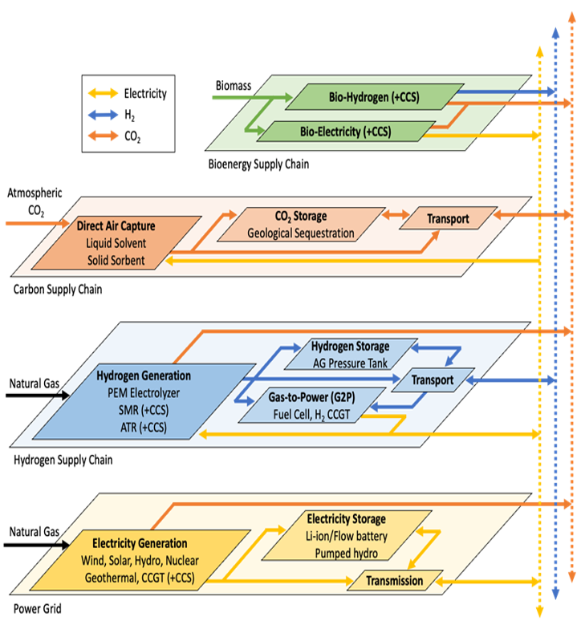
One graph for every sector
Macro represents all of this as one graph. Each supply chain becomes a network of nodes, one per commodity and zone (the circles below), and assets are the boxes that connect the networks:
- a gas plant with CCS takes gas from the natural-gas network and delivers electricity to the grid, captured CO₂ to the CO₂ pipeline network, and its residual emissions to the CO₂ sink (the atmosphere);
- an electrolyzer links the grid to the hydrogen network;
- direct air capture uses electricity to take CO₂ out of the atmosphere and deliver it to the captured-CO₂ network.
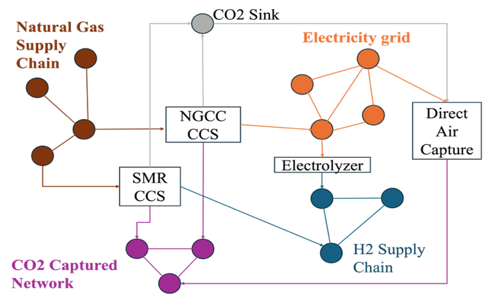
Building blocks
In this case, those networks are the nodes listed in section 1: elec_SE, elec_MIDAT and elec_NE for the grid, h2_* for hydrogen, natgas_* for gas, co2_captured_* plus the co2_storage_* sites for captured CO₂, and co2_sink for the atmosphere.
As seen in the introduction, each of these nodes is connected by edges that represent the flow of commodities. Each asset is represented as a "box", a set of edges, transformations and storage, that connects the nodes together and represents the physical and operational characteristics of a technology.
Inside each asset, the pieces are always the same few building blocks:
| Block | What it does |
|---|---|
| Edge | carries a single commodity |
| Transformation | converts commodities into each other, through balance equations |
| Storage | holds a commodity over time |
Let's, for example, look at two assets present in the system: a gas plant and an autothermal reforming (ATR) plant. The gas plant takes natural gas from the natgas_SE node, burns it to produce electricity for the elec_SE node, and emits CO₂ to the co2_sink. The ATR plant takes natural gas from the natgas_SE node, electricity from the elec_SE node and converts it into hydrogen for the h2_SE node, and also captures some of the CO₂ emissions to send to the co2_captured_SE node, while the rest is emitted to the co2_sink.
load_case reads the input files and builds this graph as a System. Loading also writes a few helper files next to the inputs, so this works on its own copy of the case (runs/inspect); section 3 makes the copy it solves.
inspect_dir = fresh_copy("inspect") # loading writes helper files next to the inputs, so load a copy
case = load_case(inspect_dir)
system = case.systems[1]
println(length(system.assets), " assets, ", count(n -> n isa Node, system.locations), " nodes, ",
length(system.commodities), " commodities")
sort!(combine(groupby(DataFrame(asset_type = [string(nameof(typeof(a))) for a in system.assets]), :asset_type), nrow => :count),
:count, rev = true)215 assets, 66 nodes, 17 commodities
23×2 DataFrame
Row │ asset_type count
─────┼─────────────────────────────
1 │ VRE 50
2 │ ThermalPower 39
3 │ BECCSLiquidFuels 12
4 │ BECCSNaturalGas 12
5 │ CO2Injection 12
6 │ DownstreamEmissions 12
7 │ UpstreamEmissions 12
8 │ GasStorage 7
9 │ BECCSElectricity 6
10 │ BECCSGasoline 6
11 │ BECCSHydrogen 6
12 │ Battery 6
13 │ ThermalHydrogenCCS 6
14 │ ElectricDAC 3
15 │ Electrolyzer 3
16 │ HydroRes 3
17 │ MustRun 3
18 │ NaturalGasDAC 3
19 │ ThermalHydrogen 3
20 │ ThermalPowerCCS 3
21 │ SyntheticLiquidFuels 3
22 │ SyntheticNaturalGas 3
23 │ TransmissionLink 2Asset close-up: a gas power plant
Starting with the simplest asset: a natural-gas combined-cycle power plant. Every asset type can draw itself: mermaid_diagram returns a Mermaid flowchart of the type, with its transformation (the hexagon) and the edges that connect it to nodes. The fuel appears as a generic Commodity because the type works with any fuel.
In a notebook, the diagram renders inline in JupyterLab ≥ 4.1; elsewhere, paste the text into mermaid.live.
display("text/markdown", mermaid_diagram(ThermalPower))From CSV row to graph
The existing combined-cycle fleet in SE, SE_natural_gas_fired_combined_cycle_1, is one instance of this type, burning natural gas. Its CSV row became one transformation and three edges: gas in from the SE hub, electricity out to the SE grid, and CO₂ out to the atmosphere.
Show the code
"The transformation at the core of an asset."
core(asset) = only(getfield(asset, f) for f in fieldnames(typeof(asset)) if getfield(asset, f) isa ME.Transformation)
"An asset's edges: the commodity each one carries and what it connects."
function asset_edges(asset)
edges = [(f, getfield(asset, f)) for f in fieldnames(typeof(asset)) if getfield(asset, f) isa ME.AbstractEdge]
DataFrame(edge = [string(f) for (f, _) in edges],
commodity = [string(ME.commodity_type(e)) for (_, e) in edges],
from = [string(ME.id(e.start_vertex)) for (_, e) in edges],
to = [string(ME.id(e.end_vertex)) for (_, e) in edges],
has_capacity = [ME.has_capacity(e) for (_, e) in edges])
end
ccgt = get_asset_by_id(system, :SE_natural_gas_fired_combined_cycle_1)
asset_edges(ccgt)3×5 DataFrame
Row │ edge commodity from to has_capacity
─────┼──────────────────────────────────────────────────────────────────────────────────────────────────────────────────────────────────────────
1 │ elec_edge Electricity SE_natural_gas_fired_combined_cycle_1_transforms elec_SE true
2 │ fuel_edge NaturalGas natgas_SE SE_natural_gas_fired_combined_cycle_1_transforms false
3 │ co2_edge CO2 SE_natural_gas_fired_combined_cycle_1_transforms co2_sink falseBalance equations
Two balance equations tie the edge flows together at every hour:
:energycomes fromfuel_consumption, the heat rate (MWh of gas per MWh of electricity);:emissionscomes fromemission_rate(t CO₂ per MWh of gas).
Because this plant uses unit commitment (uc = true), Macro also adds start-up fuel to :energy when it builds the model (startup_fuel_consumption × capacity_size MWh of gas per start), which the stored equations below don't show.
Show the code
"Print a balance equation of a vertex as the algebra the solver sees, over the flows of its edges."
function show_balance(vertex, balance_id; strip_prefix = "")
bd = ME.balance_data(vertex, balance_id)
parts = map(enumerate(bd.terms)) do (i, term)
# Stored flow coefficients carry the edge's direction at the vertex (+1 in, −1 out); the model applies
# that direction again when it builds the constraint, so multiplying by it recovers the algebraic coefficient.
c = term.var == :flow && term.obj isa ME.AbstractEdge ? ME.balance_term_incidence(vertex, term.obj) .* term.coeff : term.coeff
name = "$(term.var)($(replace(string(ME.id(term.obj)), strip_prefix => "")))"
c isa AbstractVector && return (i == 1 ? "" : "+ ") * "c(t) × $name"
sign = c < 0 ? "− " : (i == 1 ? "" : "+ ")
return "$(sign)$(round(abs(c); sigdigits = 4)) × $name"
end
sense = get(Dict(:eq => "=", :le => "≤", :ge => "≥"), bd.sense, string(bd.sense))
println(rpad(":" * string(balance_id), 14), join(parts, " "), " $sense ", bd.constant)
end
"Print every balance equation of an asset's core transformation."
show_balances(asset) = foreach(b -> show_balance(core(asset), b; strip_prefix = string(asset.id) * "_"), ME.balance_ids(core(asset)))
show_balances(ccgt):emissions 0.181 × flow(fuel_edge) − 1.0 × flow(co2_edge) = 0.0
:energy 1.0 × flow(fuel_edge) − 2.132 × flow(elec_edge) = 0.0Asset close-up: hydrogen from gas with CCS
A hydrogen plant using autothermal reforming (ATR) with carbon capture follows the same pattern with two more edges: it also draws electricity, and it sends most of its CO₂ to the captured-CO₂ network instead of the atmosphere.
display("text/markdown", mermaid_diagram(ThermalHydrogenCCS))Five edges, four balance equations
The plant in the SE zone, SE_ATR_wCCS_94pct, is one instance of this type. Its CSV row became one transformation and five edges, each connected to a node:
atr = get_asset_by_id(system, :SE_ATR_wCCS_94pct)
asset_edges(atr)5×5 DataFrame
Row │ edge commodity from to has_capacity
─────┼──────────────────────────────────────────────────────────────────────────────────────────────────────────
1 │ h2_edge Hydrogen SE_ATR_wCCS_94pct_transforms h2_SE true
2 │ elec_edge Electricity elec_SE SE_ATR_wCCS_94pct_transforms false
3 │ fuel_edge NaturalGas natgas_SE SE_ATR_wCCS_94pct_transforms false
4 │ co2_edge CO2 SE_ATR_wCCS_94pct_transforms co2_sink false
5 │ co2_captured_edge CO2Captured SE_ATR_wCCS_94pct_transforms co2_captured_SE falseThe flat CSV columns (fuel_consumption, electricity_consumption, emission_rate, capture_rate) became the coefficients of four balance equations that tie the edge flows together at every hour:
show_balances(atr):emissions 0.009958 × flow(fuel_edge) − 1.0 × flow(co2_edge) = 0.0
:energy 1.0 × flow(fuel_edge) − 1.3 × flow(h2_edge) = 0.0
:electricity 1.0 × flow(elec_edge) − 0.1016 × flow(h2_edge) = 0.0
:capture 0.1711 × flow(fuel_edge) − 1.0 × flow(co2_captured_edge) = 0.0Time-domain reduction
Instead of 8,760 hours, the case models three representative weeks (504 hours). Each week carries a weight: the number of calendar weeks it stands in for. Weights turn hourly results into annual totals, and every annualized number below uses them.
Show the code
td = system.time_data[:Electricity]
rep_weeks = td.subperiod_indices
rep_weights = [td.subperiod_weights[w] for w in rep_weeks]
println(DataFrame(representative_week = rep_weeks, hours = length.(td.subperiods), weeks_represented = round.(rep_weights; digits = 2)))
calendar = sort(collect(td.subperiod_map), by = first) # calendar week => representative week
p = plot(; title = "Which representative week stands in for each calendar week", xlabel = "Calendar week",
yaxis = false, yticks = false, grid = false, ylims = (0, 1.25), xlims = (0.5, length(calendar) + 0.5),
xticks = 1:4:length(calendar), size = (900, 230))
for (i, r) in enumerate(rep_weeks)
weeks = [w for (w, rep) in calendar if rep == r]
bar!(p, weeks, ones(length(weeks)); bar_width = 0.85, linewidth = 0, color = THREE[i],
label = "Week $r (×$(fmt(rep_weights[i]; digits = 1)))")
end
scatter!(p, rep_weeks, fill(1.12, length(rep_weeks)); marker = :dtriangle, markersize = 6, color = INK,
markerstrokewidth = 0, label = "the week itself")
p3×3 DataFrame
Row │ representative_week hours weeks_represented
─────┼───────────────────────────────────────────────
1 │ 7 168 23.06
2 │ 18 168 9.02
3 │ 33 168 20.05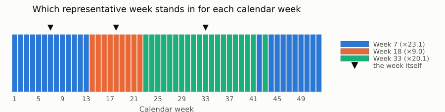
(Advanced) Sub-commodities
Sub-commodities are more specific versions of a commodity. commodities.json declares them with acts_like:
{"name": "Gasoline", "acts_like": "LiquidFuels"}means gasoline is a kind of liquid fuel. Any technology that can handle liquid fuels can also handle gasoline, but gasoline gets its own nodes, so it's tracked separately from diesel or jet fuel.
This case uses the same idea to keep fossil fuels apart. Fossil_Gasoline is also a liquid fuel, so the model can tell how much gasoline came from oil and how much was made from biomass or synthesis. Likewise, Biomass_Wood and Biomass_Herb are two kinds of biomass with their own prices and supply limits.
subs = [(c, T) for (c, T) in system.commodities if supertype(T) != ME.Commodity]
sort!(DataFrame(commodity = [string(c) for (c, _) in subs], acts_like = [string(nameof(supertype(T))) for (_, T) in subs]), :acts_like)10×2 DataFrame
Row │ commodity acts_like
─────┼────────────────────────────────
1 │ Biomass_Wood Biomass
2 │ Biomass_Herb Biomass
3 │ CO2Captured CO2
4 │ Diesel LiquidFuels
5 │ Gasoline LiquidFuels
6 │ Fossil_JetFuel LiquidFuels
7 │ JetFuel LiquidFuels
8 │ Fossil_Gasoline LiquidFuels
9 │ Fossil_Diesel LiquidFuels
10 │ Fossil_NaturalGas NaturalGas3. Solve
run_case does everything in one call: load the case, build the JuMP model, solve, and write CSV results.
- This run: the case without its CO₂ cap. Section 5 adds the cap back.
- Solver: HiGHS, the open-source solver Macro uses by default. Any solver supported by JuMP can be passed as
optimizer. - Options:
optimizer_attributespasses solver settings: the interior-point method followed by crossover, with the log silenced. Each of the two solves in this notebook takes a few minutes.
const HIGHS_OPTIONS = ("solver" => "ipm", "run_crossover" => "on", "ipm_optimality_tolerance" => 1e-3, "log_to_console" => false)
# Start from a fresh working copy of the case (helpers defined in the setup cells)
base_dir = prepare_case("base"; co2_cap = false) # first run: no CO₂ cap (section 5 adds it)
t0 = time()
case, model = run_case(base_dir; optimizer = HiGHS.Optimizer, optimizer_attributes = HIGHS_OPTIONS, log_to_file = false)
println("run_case took ", round(time() - t0; digits = 1), " s")
system = case.systems[1];Did it solve?
Every run also writes run_status.json next to the case: a machine-readable verdict that's handy for batch runs on a cluster.
println("termination status: ", ME.JuMP.termination_status(model), " primal status: ", ME.JuMP.primal_status(model))
println("objective: ", round(ME.JuMP.objective_value(model); sigdigits = 5), " \$/yr")
print(read(joinpath(base_dir, "run_status.json"), String))termination status: OPTIMAL primal status: FEASIBLE_POINT
objective: 2.1293e11 $/yr
{
"status": "OK",
"case_path": "/path/to/tutorials/runs/base",
"timestamp": "2026-11-04T11:11:08.778",
"elapsed_seconds": 423.334,
"output_path": "/path/to/tutorials/runs/base/results",
"termination_status": "OPTIMAL"
}4. What the model chose, with no climate policy
Every run writes the same set of long-format CSV files. load_results reads the ones used below and annualizes flows with the time weights (annual = value × weight, since the time step is 1 hour).
Show the code
"Read the CSV outputs of a solved case and annualize flows with the time weights."
function load_results(dir)
out = joinpath(dir, "results", "results")
rd(f) = CSV.read(joinpath(out, f), DataFrame)
tw = rd("time_weights.csv")
@assert tw.time == 1:nrow(tw)
flows = rd("flows.csv")
flows.annual = flows.value .* tw.weight[flows.time]
return (; dir = out, weights = tw.weight, flows,
capacity = rd("capacity.csv"),
prices = rd("balance_duals.csv"), # one column per node, one row per time step
co2 = isfile(joinpath(out, "co2_cap_duals.csv")) ? rd("co2_cap_duals.csv") : nothing, # written only when there is a cap
costs = rd("costs.csv"),
costs_by_type = rd("costs_by_type.csv"))
end
base = load_results(base_dir)
filter(endswith(".csv"), readdir(base.dir))15-element Vector{String}:
"balance_duals.csv"
"capacity.csv"
"capex.csv"
"costs.csv"
"costs_by_type.csv"
"costs_by_zone.csv"
"curtailment.csv"
"flows.csv"
"non_served_demand.csv"
"objective_value.csv"
"storage_level.csv"
"time_weights.csv"
"undiscounted_costs.csv"
"undiscounted_costs_by_type.csv"
"undiscounted_costs_by_zone.csv"Headline numbers
Show the code
const ELEC_NODES = ["elec_" * z for z in ZONES]
const H2_NODES = ["h2_" * z for z in ZONES]
"Group an electricity-producing component into one of TECH_ORDER."
function tech_group(resource_type, resource_id)
rt, id = String(resource_type), lowercase(String(resource_id))
startswith(rt, "VRE") && return occursin("wind", id) ? "Wind" : "Solar"
rt == "ThermalPower{Uranium}" && return "Nuclear"
rt in ("ThermalPower{NaturalGas}", "ThermalPowerCCS{NaturalGas}") && return "Natural gas"
rt == "ThermalPower{Hydrogen}" && return "H₂ turbines"
rt in ("HydroRes", "MustRun") && return "Hydro" # MustRun here is small hydro
rt == "Battery" && return "Battery"
return "Other" # power co-produced by bioenergy and DAC plants
end
"Annual end-use demand (from the input time series) summed over the given nodes."
annual_demand(system, weights, node_ids) =
sum(sum(ME.demand(n) .* weights) for n in system.locations if n isa Node && string(ME.id(n)) in node_ids)
"Time-weighted average of the hourly prices (balance duals) over the given nodes."
avg_price(res, node_ids) = sum(sum(res.prices[!, n] .* res.weights) for n in node_ids) / (sum(res.weights) * length(node_ids))
"Net flow into the atmosphere (the `co2_sink` node), t/yr: emissions minus removals."
net_emissions(res) = sum(res.flows.annual[(res.flows.node_in .== "co2_sink") .| (res.flows.node_out .== "co2_sink")])
objective(res) = only(filter(r -> r.variable == "DiscountedTotalCost", res.costs).value)
co2_penalty_paid(res) = sum(r.value for r in eachrow(res.costs_by_type) if r.type == "Total" && r.category == "UnmetPolicyPenalty"; init = 0.0)
"Headline numbers of a solved case."
function headline(res)
elec = filter(r -> r.commodity == "Electricity" && startswith(r.component_type, r"(Unidirectional)?Edge"), res.capacity)
gw(group, var) = sum(r.value for r in eachrow(elec) if r.variable == var && tech_group(r.resource_type, r.resource_id) == group; init = 0.0) / 1e3
stored = sum(res.flows.annual[(res.flows.resource_type .== "CO2Injection") .& (res.flows.value .> 0)]; init = 0.0)
DataFrame(metric = ["Objective (system cost + CO₂ penalty)", "System cost (excl. CO₂ penalty)", "CO₂ penalty paid",
"CO₂ price (shadow price of the cap)", "Net CO₂ emissions", "CO₂ into geologic storage",
"Avg. electricity price", "Avg. hydrogen price",
"New solar + wind", "New nuclear", "Retired natural-gas power"],
value = [objective(res) / 1e9, (objective(res) - co2_penalty_paid(res)) / 1e9, co2_penalty_paid(res) / 1e9,
(isnothing(res.co2) ? 0.0 : only(res.co2.CO2_Shadow_Price)), net_emissions(res) / 1e6, stored / 1e6,
avg_price(res, ELEC_NODES), avg_price(res, H2_NODES),
gw("Solar", "new_capacity") + gw("Wind", "new_capacity"), gw("Nuclear", "new_capacity"),
gw("Natural gas", "retired_capacity")],
unit = ["\$B/yr", "\$B/yr", "\$B/yr", "\$/t", "Mt/yr", "Mt/yr", "\$/MWh", "\$/MWh-H₂", "GW", "GW", "GW"])
end
base_headline = headline(base)
transform(base_headline, :value => ByRow(v -> round(v; sigdigits = 4)) => :value)11×3 DataFrame
Row │ metric value unit
─────┼──────────────────────────────────────────────────────────────
1 │ Objective (system cost + CO₂ penalty) 212.9 $B/yr
2 │ System cost (excl. CO₂ penalty) 212.9 $B/yr
3 │ CO₂ penalty paid 0.0 $B/yr
4 │ CO₂ price (shadow price of the cap) 0.0 $/t
5 │ Net CO₂ emissions 684.7 Mt/yr
6 │ CO₂ into geologic storage 4.259e-16 Mt/yr
7 │ Avg. electricity price 32.94 $/MWh
8 │ Avg. hydrogen price 25.57 $/MWh-H₂
9 │ New solar + wind 387.6 GW
10 │ New nuclear 0.0 GW
11 │ Retired natural-gas power 17.48 GWReading the headline
No CO₂ cap and no carbon price: the cheapest system on cost alone.
- Wind and solar still win on cost: about 390 GW of new wind and solar, with no policy pushing them.
- Gas stays the backbone: 192 of 210 GW of gas plants are kept.
- Nuclear shrinks: 41 of 62 GW of existing plants retire, and none is built.
Electricity capacity: what's kept, retired and built
Capacity of electricity-producing components by technology group. The grey bar is capacity that existed before the optimization, and the colored bar is the optimal fleet.
The existing "Battery" capacity is pumped hydro, which Macro models with its Battery asset. For batteries this is discharge power; storage energy (MWh) is sized separately.
Show the code
"Existing and optimal capacity (GW) of electricity-producing components, by technology group."
function capacity_by_tech(res)
c = filter(r -> r.commodity == "Electricity" && startswith(r.component_type, r"(Unidirectional)?Edge") &&
!endswith(r.component_id, "_charge_edge"), res.capacity)
c.group = tech_group.(c.resource_type, c.resource_id)
wide = unstack(combine(groupby(c, [:group, :variable]), :value => (v -> sum(v) / 1e3) => :GW), :variable, :GW)
return sort!(wide, order(:group, by = g -> findfirst(==(g), TECH_ORDER)))
end
cap_base = capacity_by_tech(base)
println(select(cap_base, :group, :existing_capacity, :retired_capacity, :new_capacity, :capacity))
hbar_pair(cap_base.group, cap_base.existing_capacity, cap_base.capacity;
colors = [TECH_COLORS[g] for g in cap_base.group], ref_label = "Existing", label = "Optimal (colored by technology)",
unit = " GW", title = "Electricity capacity by technology, GW")7×5 DataFrame
Row │ group existing_capacity retired_capacity new_capacity capacity
─────┼──────────────────────────────────────────────────────────────────────────
1 │ Nuclear 61.5709 40.8649 0.0 20.706
2 │ Hydro 38.6654 0.0 0.0 38.6654
3 │ Natural gas 209.685 17.4826 0.0 192.202
4 │ Wind 6.8861 0.0 271.052 277.938
5 │ H₂ turbines 0.0 0.0 0.0 0.0
6 │ Solar 13.1064 0.0 116.576 129.683
7 │ Battery 14.7129 0.0 0.0 14.7129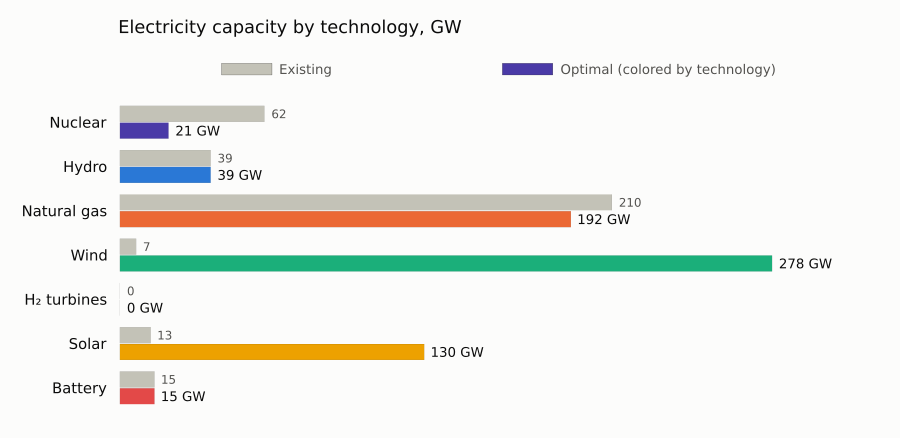
Sector coupling: where electricity comes from and where it goes
Annual electricity supply by technology (left) and use (right), all zones combined, on one shared scale.
- End-use demand is the input demand time series. Any other use is load from other sectors: electrolyzers, direct air capture, fuel synthesis.
- Without a cap there's almost none: hydrogen comes from gas, so the other sectors barely draw on the grid. Section 5 shows how that changes.
- Transmission between zones is excluded, and supply exceeds use by storage and transmission losses.
Show the code
"Annual flows (TWh or Mt) into and out of a set of nodes, excluding flows between those nodes."
function sources_and_uses(res, nodes, source_label, use_label)
f = res.flows
into = in(nodes).(f.node_out) .& .!in(nodes).(f.node_in)
outof = in(nodes).(f.node_in) .& .!in(nodes).(f.node_out)
src, use = f[into, :], f[outof, :]
src.label = source_label.(src.resource_type, src.resource_id)
use.label = use_label.(use.resource_type, use.resource_id)
src, use = filter(r -> !isnothing(r.label), src), filter(r -> !isnothing(r.label), use)
sources = combine(groupby(src, :label), :annual => (x -> sum(max.(x, 0)) / 1e6) => :annual)
uses = combine(groupby(use, :label), :annual => (x -> sum(max.(-x, 0)) / 1e6) => :annual)
return filter(r -> r.annual > 0.5, sources), filter(r -> r.annual > 0.5, uses) # hide flows below 0.5 TWh (or Mt) per year
end
function elec_use(rt, id)
base = first(split(String(rt), '{'))
base == "Electrolyzer" && return "Electrolysis"
base == "ElectricDAC" && return "Direct air capture"
base == "SyntheticNaturalGas" && return "Synthetic methane"
base == "SyntheticLiquidFuels" && return "Synthetic liquid fuels"
base == "ThermalHydrogenCCS" && return "H₂ from gas + CCS"
base == "Battery" && return "Battery charging"
base == "GasStorage" && return "H₂ storage & pipelines"
startswith(base, "BECCS") && return "Bioenergy + CCS"
return "Other"
end
elec_src, elec_uses = sources_and_uses(base, ELEC_NODES, tech_group, elec_use)
push!(elec_uses, ("End-use demand", annual_demand(system, base.weights, ELEC_NODES) / 1e6))
xmax, rows = maximum(vcat(elec_src.annual, elec_uses.annual)), max(nrow(elec_src), nrow(elec_uses))
p1 = hbar(elec_src.label, elec_src.annual; colors = [TECH_COLORS[l] for l in elec_src.label], title = "Supply, TWh/yr", xmax, rows)
p2 = hbar(elec_uses.label, elec_uses.annual; title = "Use, TWh/yr", xmax, rows)
plot(p1, p2; layout = (1, 2), size = (1100, 80 + 30 * rows))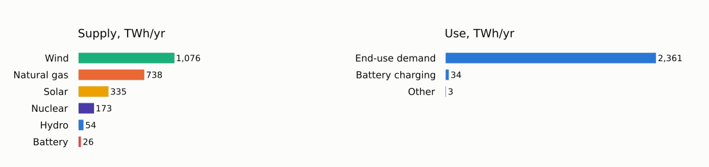
An hour-by-hour look
One representative week in one zone. The stack is electricity delivered into the zone's grid by technology (imports excluded), and the black line is end-use demand. Wind and gas do most of the work, with gas flexing down when the sun is up; supply above the demand line is exported or stored.
Show the code
ZONE, REP = "SE", 1 # REP ∈ 1:3 indexes the representative weeks shown above (3 = the summer week)
function dispatch_plot(res, system; zone = ZONE, rep = REP, hours_per_week = 168)
node = "elec_" * zone
hours = (rep - 1) * hours_per_week + 1 : rep * hours_per_week
f = res.flows
sel = (f.node_out .== node) .& .!in(ELEC_NODES).(f.node_in) .& in(hours).(f.time)
gen = combine(groupby(transform(f[sel, :], [:resource_type, :resource_id] => ByRow(tech_group) => :group), [:group, :time]),
:value => (v -> sum(max.(v, 0)) / 1e3) => :GW)
M = zeros(length(hours), length(TECH_ORDER))
for r in eachrow(gen)
M[r.time - first(hours) + 1, findfirst(==(r.group), TECH_ORDER)] += r.GW
end
x = 0:length(hours) - 1
top = cumsum(M; dims = 2)
# plot_title: the panels get no blank-title band of their own; the combined figure gets one (see the end)
p1 = plot(; plot_title = "", ylabel = "GW", title = "$zone, representative week $(rep_weeks[rep]): electricity supply")
for j in reverse(eachindex(TECH_ORDER)) # draw the top layer first so the legend reads top → bottom
maximum(M[:, j]) > 0.5 || continue # skip groups that never exceed 0.5 GW this week
plot!(p1, x, top[:, j]; fillrange = j == 1 ? 0 : top[:, j - 1], fillalpha = 1, linewidth = 0.5,
linecolor = SURFACE, color = TECH_COLORS[TECH_ORDER[j]], label = TECH_ORDER[j])
end
node_obj = only(n for n in system.locations if n isa Node && string(ME.id(n)) == node)
plot!(p1, x, ME.demand(node_obj)[hours] ./ 1e3; color = INK, linewidth = 2, label = "End-use demand")
elz = f[(f.node_in .== node) .& (f.resource_type .== "Electrolyzer") .& in(hours).(f.time), :]
elz_load = combine(groupby(elz, :time), :value => (v -> -sum(v) / 1e3) => :GW)
p2 = plot(elz_load.time .- first(hours), elz_load.GW; plot_title = "", fillrange = 0, fillalpha = 0.25, color = NEUTRAL,
legend = false, ylabel = "GW", title = "Electrolyzer load")
p3 = plot(x, res.prices[hours, node]; plot_title = "", color = NEUTRAL, linewidth = 1.5, legend = false,
ylabel = "\$/MWh", title = "Electricity price (balance dual)")
ticks = (12:24:length(hours), ["Day $d" for d in 1:length(hours) ÷ 24])
if isempty(elz_load.GW) || maximum(elz_load.GW) < 0.5 # no electrolyzers running this week: skip their panel
return plot(p1, p3; plot_title = " ", layout = grid(2, 1; heights = [0.67, 0.33]), link = :x, xticks = ticks,
size = (950, 570), left_margin = 6Plots.mm)
end
plot(p1, p2, p3; plot_title = " ", layout = grid(3, 1; heights = [0.5, 0.25, 0.25]), link = :x, xticks = ticks,
size = (950, 760), left_margin = 6Plots.mm)
end
dispatch_plot(base, system)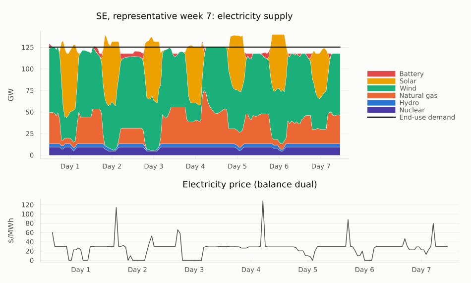
Prices: duration curves
Back to the markets: every node clears every hour, and the price it clears at is its balance dual, the marginal cost of one more unit there. For electricity and hydrogen, these are locational marginal prices. Sorting each zone's hourly prices from highest to lowest, and stretching every hour by its time weight, gives a price-duration curve over the 8,760 hours of the year.
Show the code
"Price-duration curve: prices sorted high → low against cumulative hours of the year."
function duration_curve(prices, weights)
o = sortperm(prices; rev = true)
return vcat(0, cumsum(weights[o])), vcat(prices[o], prices[o][end])
end
function price_duration_plot(res, prefix, title, unit; ymax = nothing)
p = plot(; title, xlabel = "Hours of the year", ylabel = unit, xlims = (0, 8760), legend = :topright)
for z in ZONES
h, pr = duration_curve(res.prices[!, prefix * z], res.weights)
plot!(p, h, pr; seriestype = :steppost, color = ZONE_COLORS[z], label = z)
end
isnothing(ymax) || plot!(p; ylims = (0, ymax))
return p
end
nodes = vcat(ELEC_NODES, H2_NODES)
price_stats = DataFrame(node = nodes,
mean = [sum(base.prices[!, n] .* base.weights) / sum(base.weights) for n in nodes],
min = [minimum(base.prices[!, n]) for n in nodes],
max = [maximum(base.prices[!, n]) for n in nodes])
println(transform(price_stats, Not(:node) .=> ByRow(v -> round(v; digits = 1)); renamecols = false))
plot(price_duration_plot(base, "elec_", "Electricity (y-axis cut at \$300; maxima in the table)", "\$/MWh"; ymax = 300),
price_duration_plot(base, "h2_", "Hydrogen", "\$/MWh-H₂"); layout = (1, 2), size = (1050, 400))6×4 DataFrame
Row │ node mean min max
─────┼───────────────────────────────────────
1 │ elec_SE 32.3 -0.0 300.4
2 │ elec_MIDAT 31.1 -0.0 285.7
3 │ elec_NE 35.5 -0.0 708.8
4 │ h2_SE 24.6 21.1 31.2
5 │ h2_MIDAT 24.2 18.6 31.1
6 │ h2_NE 27.9 21.9 44.1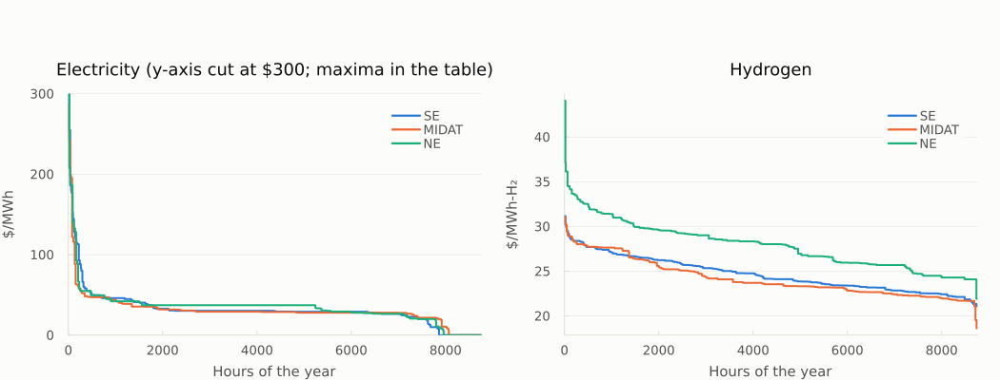
What electricity costs, and who pays what
Pricing every MWh withdrawn from the grid at its hourly nodal price gives the annual electricity bill:
\[\text{cost} = \sum_{e,\,t} -\,\text{flow}_{e,t} \times \text{dual}_{n(e),t} \times \text{weight}_t\]
Here e ranges over the edges leaving the zone nodes (their flows are negative), and end-use demand is priced the same way. Dividing each use's bill by its energy gives the average price it pays.
Loads that can pick their hours pay less: battery charging (here, all of it pumped hydro) pays about USD 17/MWh against a USD 33 average. Without a cap there's little such flexible load; section 5 adds a lot of it.
Show the code
"Annual cost of electricity withdrawn from the zone nodes at hourly nodal prices, by use (uses below `min_energy` MWh/yr dropped)."
function electricity_bill(res, system; min_energy = 1e5)
f = res.flows
rows = f[in(ELEC_NODES).(f.node_in) .& .!in(ELEC_NODES).(f.node_out), :]
price = Dict(n => res.prices[!, n] for n in ELEC_NODES)
rows.cost = -rows.value .* [price[n][t] for (n, t) in zip(rows.node_in, rows.time)] .* res.weights[rows.time]
rows.energy = -rows.annual
rows.use = elec_use.(rows.resource_type, rows.resource_id)
bill = combine(groupby(rows, :use), :cost => sum => :cost, :energy => sum => :energy)
demand_cost, demand_energy = 0.0, 0.0
for n in system.locations
(n isa Node && string(ME.id(n)) in ELEC_NODES) || continue
d = ME.demand(n)
demand_cost += sum(d .* price[string(ME.id(n))] .* res.weights)
demand_energy += sum(d .* res.weights)
end
push!(bill, ("End-use demand", demand_cost, demand_energy))
bill = filter(r -> r.energy > min_energy, bill)
bill.avg_price = bill.cost ./ bill.energy
return sort!(bill, :cost, rev = true)
end
"Total annual electricity cost, Σ −flow × dual × weight over all withdrawals (\$/yr)."
electricity_cost(res, system) = sum(electricity_bill(res, system; min_energy = -Inf).cost)
all_uses = electricity_bill(base, system; min_energy = -Inf)
println("Total annual electricity cost: ", fmt(electricity_cost(base, system) / 1e9; digits = 1), " \$B/yr for ",
fmt(sum(all_uses.energy) / 1e6), " TWh (", fmt(sum(all_uses.cost) / sum(all_uses.energy); digits = 1), " \$/MWh on average)")
bill = electricity_bill(base, system) # uses below 0.1 TWh/yr dropped from the table and charts
println(transform(bill, :cost => ByRow(v -> round(v / 1e9; digits = 2)) => :cost_B,
:energy => ByRow(v -> round(v / 1e6; digits = 1)) => :TWh,
:avg_price => ByRow(v -> round(v; digits = 1)) => :avg_price)[:, [:use, :cost_B, :TWh, :avg_price]])
avg_all = avg_price(base, ELEC_NODES)
p1 = hbar(bill.use, bill.cost ./ 1e9; digits = 1, title = "Annual bill, \$B/yr")
p2 = hbar(bill.use, bill.avg_price; digits = 1, title = "Average price paid, \$/MWh", ref = avg_all,
ref_label = "time-weighted average $(fmt(avg_all; digits = 1))")
plot(p1, p2; layout = (1, 2), size = (1100, 110 + 30 * nrow(bill)))Total annual electricity cost: 77.3 $B/yr for 2,399 TWh (32.2 $/MWh on average)
3×4 DataFrame
Row │ use cost_B TWh avg_price
─────┼───────────────────────────────────────────────
1 │ End-use demand 76.62 2361.2 32.4
2 │ Battery charging 0.57 34.2 16.8
3 │ Other 0.11 3.4 32.2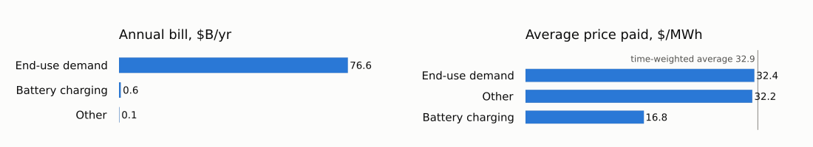
What each technology earns per MWh
The same formula on the supply side gives the average price each technology earns per MWh it delivers, known in power markets as its capture price.
Solar earns the least: it sells into the midday hours it floods itself. Batteries earn the most, selling into the few scarce hours.
Show the code
"Average price earned per MWh delivered to the zone nodes, by technology group."
function capture_prices(res)
f = res.flows
rows = f[in(ELEC_NODES).(f.node_out) .& .!in(ELEC_NODES).(f.node_in) .& (f.value .> 0), :]
price = Dict(n => res.prices[!, n] for n in ELEC_NODES)
rows.revenue = rows.value .* [price[n][t] for (n, t) in zip(rows.node_out, rows.time)] .* res.weights[rows.time]
rows.group = tech_group.(rows.resource_type, rows.resource_id)
cp = combine(groupby(rows, :group), :revenue => sum => :revenue, :annual => sum => :energy)
cp = filter(r -> r.energy > 1e5, cp) # drop groups below 0.1 TWh/yr
cp.capture_price = cp.revenue ./ cp.energy
return cp
end
cp_base = capture_prices(base)
hbar(cp_base.group, cp_base.capture_price; colors = [TECH_COLORS[g] for g in cp_base.group], digits = 1, ref = avg_all,
ref_label = "time-weighted average $(fmt(avg_all; digits = 1))",
title = "Average price earned per MWh delivered, \$/MWh")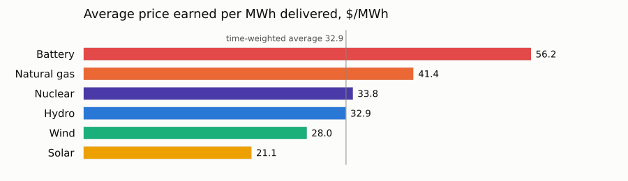
Prices by hour of day
Prices by hour of day across the 21 modeled days. With gas setting the price in most hours, the range is narrow (colors are capped at the 95th percentile, about USD 50/MWh): midday solar pulls prices down in the winter and spring weeks, and summer evenings and nights are the most expensive.
Show the code
"Heatmap of hourly electricity prices: hour of day × modeled day, one zone."
function price_heatmap(res; zone = ZONE, clip_quantile = 0.95)
p = res.prices[!, "elec_" * zone]
ndays = length(p) ÷ 24
M = reshape(p[1:24 * ndays], 24, ndays)
cap = sort(p)[ceil(Int, clip_quantile * length(p))]
ramp = cgrad(["#cde2fb", "#86b6ef", "#3987e5", "#1c5cab", "#0d366b"]) # one hue, light → dark
h = heatmap(1:ndays, 0:23, min.(M, cap); color = ramp, clims = (0, cap), colorbar_title = "\$/MWh",
xlabel = "Modeled day", ylabel = "Hour of day", yticks = 0:3:21, yflip = true, grid = false,
xticks = (4:7:ndays, ["week $(w)" for w in rep_weeks]),
title = "$zone electricity price by hour (colors capped at the $(round(Int, 100 * clip_quantile))th percentile, $(fmt(cap)) \$/MWh)",
size = (950, 380))
vline!(h, [7.5, 14.5]; color = SURFACE, linewidth = 3, label = false) # separate the representative weeks
return h
end
price_heatmap(base)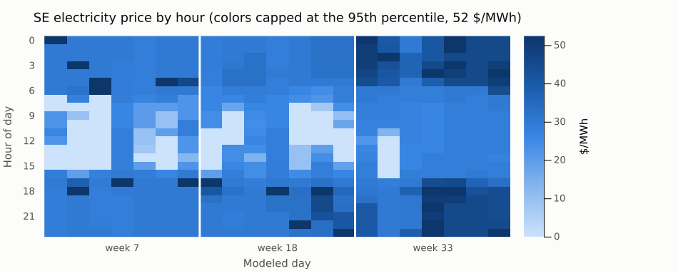
Storage: state of charge
State of charge of each storage type, as a percentage of its own energy capacity, so very different sizes share one 0–100% scale. Levels are shown within each representative week, so each week is drawn separately.
H₂ pipelines are modeled as small storage assets and are left out, as is any storage with no energy-capacity limit, or less than 1 GWh of it.
Show the code
"Aggregate state of charge (% of energy capacity) by storage type over the modeled hours."
function storage_soc(res)
sl = CSV.read(joinpath(res.dir, "storage_level.csv"), DataFrame)
sl = filter(r -> !occursin("_to_", r.resource_id), sl)
kind(rt) = startswith(rt, "Battery") ? "Battery" : startswith(rt, "HydroRes") ? "Hydro reservoirs" :
startswith(rt, "GasStorage") ? "H₂ storage" : rt
sl.kind = kind.(sl.resource_type)
cap = filter(r -> r.variable == "capacity" && occursin("Storage", r.component_type) && !occursin("_to_", r.resource_id), res.capacity)
cap.kind = kind.(cap.resource_type)
capk = combine(groupby(cap, :kind), :value => sum => :capacity)
soc = combine(groupby(sl, [:kind, :time]), :value => sum => :level)
soc = innerjoin(soc, capk, on = :kind)
soc.pct = 100 .* soc.level ./ soc.capacity
return soc, capk
end
soc, storage_caps = storage_soc(base)
println(transform(storage_caps, :capacity => ByRow(v -> round(v / 1e3; digits = 1)) => :GWh)[:, [:kind, :GWh]])
unlimited = storage_caps.kind[storage_caps.capacity .< 1e3] # MWh: no energy-capacity limit, or under 1 GWh
isempty(unlimited) || println("Left out (no energy-capacity limit, or under 1 GWh): ", join(unlimited, ", "))
p = plot(; ylabel = "% of energy capacity", ylims = (0, 100), xlabel = "Modeled hour",
xticks = (84:168:504, ["week $(w)" for w in rep_weeks]), size = (950, 360),
title = "Storage state of charge (each type relative to its own energy capacity)")
for (i, k) in enumerate(setdiff(storage_caps.kind, unlimited))
s = sort(filter(r -> r.kind == k, soc), :time)
for (j, week) in enumerate(td.subperiods) # one segment per representative week
w = filter(r -> r.time in week, s)
plot!(p, w.time, w.pct; color = THREE[i], linewidth = 1.5, label = j == 1 ? k : false)
end
end
vline!(p, [168.5, 336.5]; color = HAIRLINE, linewidth = 1, label = false)
p3×2 DataFrame
Row │ kind GWh
─────┼───────────────────────────
1 │ Battery 228.0
2 │ H₂ storage 0.0
3 │ Hydro reservoirs 0.0
Left out (no energy-capacity limit, or under 1 GWh): H₂ storage, Hydro reservoirs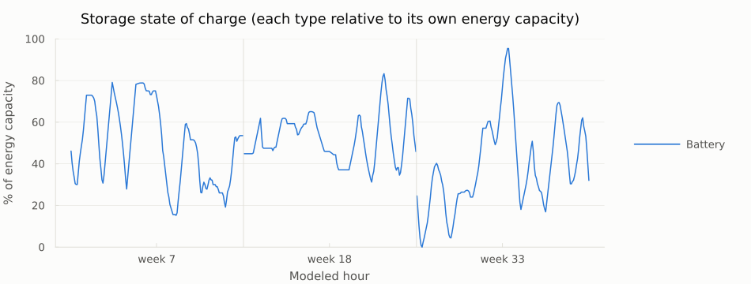
Hydrogen: production pathways and uses
Annual hydrogen production (left) and use (right), all zones combined, on one shared scale.
Without a cap, all hydrogen comes from unabated gas reforming (SMR), and it only serves direct hydrogen demand.
Show the code
function h2_source(rt, id)
base = first(split(String(rt), '{'))
base == "Electrolyzer" && return "Electrolysis"
base == "ThermalHydrogenCCS" && return occursin("ATR", String(id)) ? "Gas ATR + CCS" : "Gas SMR + CCS"
base == "ThermalHydrogen" && return "Gas SMR (unabated)"
base == "BECCSHydrogen" && return "Biomass gasification + CCS"
base == "GasStorage" && return nothing # storage and pipelines only move H₂
return "Other"
end
function h2_use(rt, id)
base = first(split(String(rt), '{'))
base == "SyntheticNaturalGas" && return "Synthetic methane"
base == "SyntheticLiquidFuels" && return "Synthetic liquid fuels"
base == "ThermalPower" && return "H₂ turbines"
base == "GasStorage" && return nothing
return "Other"
end
h2_src, h2_uses = sources_and_uses(base, H2_NODES, h2_source, h2_use)
push!(h2_uses, ("End-use demand", annual_demand(system, base.weights, H2_NODES) / 1e6))
xmax, rows = maximum(vcat(h2_src.annual, h2_uses.annual)), max(nrow(h2_src), nrow(h2_uses))
plot(hbar(h2_src.label, h2_src.annual; title = "Production, TWh-H₂/yr", xmax, rows),
hbar(h2_uses.label, h2_uses.annual; title = "Use, TWh-H₂/yr", xmax, rows);
layout = (1, 2), size = (1100, 80 + 30 * rows))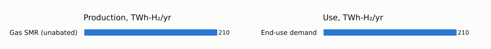
Costs
costs.csvholds the objective, split into fixed and variable costs.costs_by_type.csvbreaks costs down by asset type and category.
Without a cap, fuel and feedstock purchases (Fuel) are the largest cost.
breakdown = unstack(filter(r -> r.type == "Total", base.costs_by_type), :type, :value)
println("Objective: ", round(objective(base) / 1e9; digits = 1), " \$B/yr")
select!(transform(breakdown, :Total => ByRow(v -> round(v / 1e9; digits = 2)) => "Total \$B/yr"), Not(:Total))Objective: 212.9 $B/yr
6×2 DataFrame
Row │ category Total $B/yr
─────┼─────────────────────────
1 │ VariableOM 9.06
2 │ Fuel 137.69
3 │ Investment 39.09
4 │ FixedOM 26.33
5 │ Startup 0.76
6 │ Total 212.93capital = filter(r -> r.category in ("Investment", "FixedOM") && r.type != "Total" && !startswith(r.type, "Node"), base.costs_by_type)
capital.group = capital.type # e.g. ThermalPower{Uranium} is nuclear, ThermalPower{Hydrogen} is H₂ turbines
by_type = sort(combine(groupby(capital, :group), :value => (v -> sum(v) / 1e9) => :B), :B, rev = true)
top = first(by_type, 10)
nrow(by_type) > 10 && push!(top, ("Other ($(nrow(by_type) - 10) types)", sum(by_type.B[11:end])))
println("Total capital cost: ", fmt(sum(by_type.B); digits = 1), " \$B/yr")
hbar(top.group, top.B; digits = 1, title = "Capital cost (investment + fixed O&M) by asset type, \$B/yr")Total capital cost: 65.4 $B/yr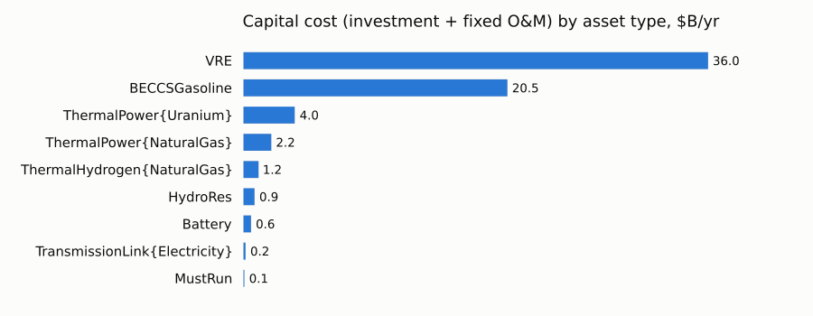
5. Scenario: adding the CO₂ cap
So far the system had no climate policy. This run uses the case as shipped, with the CO₂ cap on the atmosphere node: zero net emissions, soft at USD 1,000 per tonne. That entry in nodes.json is the only difference from the first run:
cap_dir = prepare_case("co2_cap") # the case as shipped: CO₂ cap on co2_sink
co2_sink_entry(dir) = only(n for b in ME.JSON3.read(read(joinpath(dir, "system", "nodes.json"), String)).nodes
for n in b.instance_data if n.id == "co2_sink")
println("First run (no cap):"); ME.JSON3.pretty(stdout, co2_sink_entry(base_dir))
println("\n\nThis run:"); ME.JSON3.pretty(stdout, co2_sink_entry(cap_dir))First run (no cap):
{
"constraints": {
"BalanceConstraint": false,
"CO2CapConstraint": false
},
"id": "co2_sink"
}
This run:
{
"constraints": {
"BalanceConstraint": false,
"CO2CapConstraint": true
},
"id": "co2_sink",
"rhs_policy": {
"CO2CapConstraint": 0
},
"price_unmet_policy": {
"CO2CapConstraint": 1000
}
}t0 = time()
case_cap, model_cap = run_case(cap_dir; optimizer = HiGHS.Optimizer, optimizer_attributes = HIGHS_OPTIONS, log_to_file = false)
println("run_case took ", round(time() - t0; digits = 1), " s; status ", ME.JuMP.termination_status(model_cap))
capped = load_results(cap_dir);No cap vs. cap
The headline numbers for both runs, plus the total electricity bill. The last column is what the cap changes:
with_bill(h, res, sys) = vcat(h, DataFrame(metric = "Total electricity cost", value = electricity_cost(res, sys) / 1e9, unit = "\$B/yr"))
cmp = innerjoin(rename(with_bill(base_headline, base, system), :value => :no_cap),
select(rename(with_bill(headline(capped), capped, case_cap.systems[1]), :value => :co2_cap), Not(:unit)),
on = :metric)
cmp.change = cmp.co2_cap .- cmp.no_cap
select!(cmp, :metric, :no_cap, :co2_cap, :change, :unit)
transform(cmp, [:no_cap, :co2_cap, :change] .=> ByRow(v -> round(v; sigdigits = 4)); renamecols = false)12×5 DataFrame
Row │ metric no_cap co2_cap change unit
─────┼────────────────────────────────────────────────────────────────────────────────
1 │ Objective (system cost + CO₂ penalty) 212.9 491.9 279.0 $B/yr
2 │ System cost (excl. CO₂ penalty) 212.9 308.0 95.09 $B/yr
3 │ CO₂ penalty paid 0.0 183.9 183.9 $B/yr
4 │ CO₂ price (shadow price of the cap) 0.0 1000.0 1000.0 $/t
5 │ Net CO₂ emissions 684.7 183.9 -500.8 Mt/yr
6 │ CO₂ into geologic storage 4.259e-16 40.76 40.76 Mt/yr
7 │ Avg. electricity price 32.94 55.55 22.61 $/MWh
8 │ Avg. hydrogen price 25.57 47.58 22.01 $/MWh-H₂
9 │ New solar + wind 387.6 1022.0 633.9 GW
10 │ New nuclear 0.0 70.91 70.91 GW
11 │ Retired natural-gas power 17.48 195.7 178.3 GW
12 │ Total electricity cost 77.3 174.8 97.47 $B/yrWhat the cap changes
Emissions fall by 73%, from 685 to 184 Mt/yr. Total cost rises from USD 213 to USD 492 billion a year: USD 95 billion more for the system itself, plus the USD 184 billion penalty on the emissions that remain.
- Power is rebuilt: about 425 GW more solar, 210 GW more wind and 110 GW more nuclear, while almost 180 GW of gas plants go.
- The existing nuclear fleet stays: without the cap, 41 of its 62 GW retire.
- Electricity gets expensive: the average price rises from USD 33 to USD 56/MWh, and the total electricity bill more than doubles, from USD 77 to USD 175 billion a year.
cap_co2 = capacity_by_tech(capped)
delta = outerjoin(select(cap_base, :group, :capacity => :no_cap), select(cap_co2, :group, :capacity => :co2_cap), on = :group)
delta.change = coalesce.(delta.co2_cap, 0.0) .- coalesce.(delta.no_cap, 0.0)
println(select(delta, :group, [:no_cap, :co2_cap, :change] .=> ByRow(v -> ismissing(v) ? v : round(v; digits = 1)); renamecols = false))
delta = filter(r -> abs(r.change) > 0.05, delta)
hbar(delta.group, delta.change; colors = [TECH_COLORS[g] for g in delta.group], digits = 1, unit = " GW",
title = "Change in optimal electricity capacity with the CO₂ cap (vs. no cap), GW")7×4 DataFrame
Row │ group no_cap co2_cap change
─────┼────────────────────────────────────────
1 │ Nuclear 20.7 132.5 111.8
2 │ Hydro 38.7 38.7 0.0
3 │ Natural gas 192.2 14.8 -177.4
4 │ Wind 277.9 486.2 208.2
5 │ H₂ turbines 0.0 25.8 25.8
6 │ Solar 129.7 555.4 425.7
7 │ Battery 14.7 36.4 21.7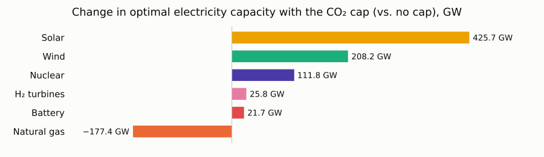
The cap couples the sectors
Without a cap, electricity serves almost only ordinary demand. With the cap, electrolyzers appear, and hydrogen moves from gas to electricity:
Show the code
"Annual electricity use by label (TWh/yr), end-use demand included."
function electricity_uses(res, sys)
uses = sources_and_uses(res, ELEC_NODES, tech_group, elec_use)[2]
push!(uses, ("End-use demand", annual_demand(sys, res.weights, ELEC_NODES) / 1e6))
return uses
end
u = outerjoin(rename(electricity_uses(base, system), :annual => :no_cap),
rename(electricity_uses(capped, case_cap.systems[1]), :annual => :co2_cap), on = :label)
u.no_cap, u.co2_cap = coalesce.(u.no_cap, 0.0), coalesce.(u.co2_cap, 0.0)
u = u[sortperm(u.co2_cap; rev = true), :]
for (name, res) in (("No cap", base), ("CO₂ cap", capped))
h2 = sort(sources_and_uses(res, H2_NODES, h2_source, h2_use)[1], :annual, rev = true)
println(rpad(name, 9), "hydrogen from: ", join(["$(r.label) $(fmt(r.annual)) TWh" for r in eachrow(h2)], ", "))
end
hbar_pair(u.label, u.no_cap, u.co2_cap; colors = fill(BAR, nrow(u)), ref_label = "No cap", label = "CO₂ cap", unit = " TWh",
title = "Electricity use, no cap vs. CO₂ cap, TWh/yr")No cap hydrogen from: Gas SMR (unabated) 210 TWh
CO₂ cap hydrogen from: Electrolysis 1,153 TWh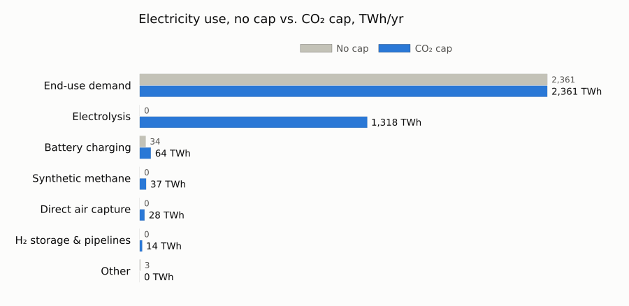
The carbon balance
The case tracks two CO₂ commodities:
| Commodity | What it is | Goes in | Comes out |
|---|---|---|---|
CO2 | the atmosphere (co2_sink), where the cap applies | combustion | direct air capture (DAC) and bioenergy with CCS (BECCS) |
CO2Captured | CO₂ in pipelines, after capture | capture plants | geologic storage (limited per site by CO2StorageConstraint) or synthetic fuels |
Annual CO₂ flows into (+) and out of (−) the atmosphere, without and with the cap:
Show the code
const CO2_LABELS = Dict(
"DownstreamEmissions{Gasoline}" => "Gasoline end use", "DownstreamEmissions{Diesel}" => "Diesel end use",
"DownstreamEmissions{JetFuel}" => "Jet fuel end use", "DownstreamEmissions{NaturalGas}" => "Natural gas end use",
"SyntheticNaturalGas" => "Synthetic methane plants", "SyntheticLiquidFuels" => "Synthetic liquid fuel plants",
"ThermalPower{NaturalGas}" => "Gas power", "ThermalPowerCCS{NaturalGas}" => "Gas power + CCS",
"ThermalHydrogen{NaturalGas}" => "H₂ from gas", "ThermalHydrogenCCS{NaturalGas}" => "H₂ from gas + CCS",
"BECCSLiquidFuels" => "BECCS liquid fuels", "BECCSGasoline" => "BECCS gasoline", "BECCSHydrogen" => "BECCS hydrogen",
"BECCSElectricity" => "BECCS power", "BECCSNaturalGas" => "BECCS methane",
"ElectricDAC" => "DAC (electric)", "NaturalGasDAC" => "DAC (gas-fired)")
"Net annual flow into the atmosphere by source (Mt/yr): positive = emission, negative = removal."
function atmosphere_balance(res; min_mt = 0.5)
f = res.flows[(res.flows.node_in .== "co2_sink") .| (res.flows.node_out .== "co2_sink"), :]
f.label = [get(CO2_LABELS, rt, rt) for rt in f.resource_type]
by = combine(groupby(f, :label), :annual => (x -> sum(x) / 1e6) => :Mt)
small = abs.(by.Mt) .< min_mt
any(small) && (by = vcat(by[.!small, :], DataFrame(label = "Other (< $(min_mt) Mt each)", Mt = sum(by.Mt[small]))))
return by
end
for (name, res) in (("No cap", base), ("CO₂ cap", capped))
by = atmosphere_balance(res)
println(rpad(name, 9) * "emissions " * fmt(sum(filter(>(0), by.Mt); init = 0.0)) * " Mt, removals " *
fmt(-sum(filter(<(0), by.Mt); init = 0.0)) * " Mt, net " * fmt(sum(by.Mt); digits = 1) * " Mt/yr")
end
# Both runs on the same rows: sources below 0.5 Mt/yr in both runs are grouped
both = outerjoin(rename(atmosphere_balance(base; min_mt = 0), :Mt => :no_cap),
rename(atmosphere_balance(capped; min_mt = 0), :Mt => :co2_cap), on = :label)
both.no_cap, both.co2_cap = coalesce.(both.no_cap, 0.0), coalesce.(both.co2_cap, 0.0)
small = max.(abs.(both.no_cap), abs.(both.co2_cap)) .< 0.5
any(small) && (both = vcat(both[.!small, :], DataFrame(label = "Other (< 0.5 Mt each)", no_cap = sum(both.no_cap[small]), co2_cap = sum(both.co2_cap[small]))))
both = both[sortperm(both.no_cap .+ both.co2_cap; rev = true), :]
hbar_pair(both.label, both.no_cap, both.co2_cap; colors = [v > 0 ? EMIT : REMOVE for v in both.co2_cap],
ref_label = "No cap", label = "CO₂ cap (red: emission, blue: removal)", digits = 1, unit = " Mt",
title = "Annual CO₂ flows into (+) and out of (−) the atmosphere, Mt/yr")No cap emissions 808 Mt, removals 123 Mt, net 684.7 Mt/yr
CO₂ cap emissions 478 Mt, removals 294 Mt, net 183.9 Mt/yr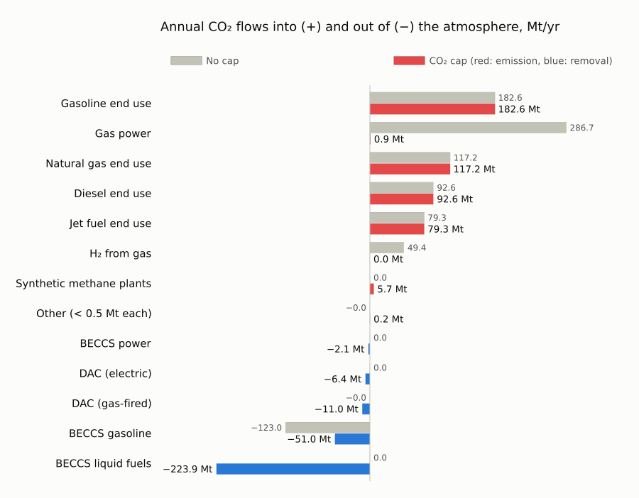
Emissions from burning fuels don't change: fuel demand is fixed. The cap all but removes the emissions from gas power (287 → 1 Mt) and from hydrogen made from gas (49 → 0 Mt), and pays for removals: BECCS and direct air capture.
Even without the cap, some gasoline is made from biomass: the CO₂ its biomass absorbed shows up as a removal (123 Mt), and it's emitted again when that gasoline burns.
Captured CO₂: where it comes from and where it goes
Without the cap, nothing is captured. With it, about 170 Mt/yr is, mostly at BECCS fuel plants. Geologic storage is capped at 40.8 Mt/yr, so most captured CO₂ becomes synthetic methane instead, and the captured-CO₂ markets clear at a negative price (their balance dual): whoever brings captured CO₂ pays to get rid of it. It's a liability, not a resource.
Show the code
"Where captured CO₂ comes from and where it goes (Mt/yr)."
function captured_co2(res)
f = res.flows[res.flows.commodity .== "CO2Captured", :]
nodes = unique(filter(startswith("co2_captured_"), vcat(f.node_in, f.node_out)))
captured = combine(groupby(f[in(nodes).(f.node_out) .& .!in(nodes).(f.node_in), :], :resource_type), :annual => (x -> sum(x) / 1e6) => :Mt)
fate = combine(groupby(f[in(nodes).(f.node_in) .& .!in(nodes).(f.node_out), :], :resource_type), :annual => (x -> -sum(x) / 1e6) => :Mt)
return (captured = sort!(filter(r -> r.Mt > 0.05, captured), :Mt, rev = true),
fate = sort!(filter(r -> r.Mt > 0.05, fate), :Mt, rev = true))
end
cc = captured_co2(capped)
storage_limit = sum(ME.rhs_policy(n)[CO2StorageConstraint] for n in case_cap.systems[1].locations
if n isa Node && haskey(ME.rhs_policy(n), CO2StorageConstraint))
println("Captured without the cap: ", fmt(sum(captured_co2(base).captured.Mt; init = 0.0); digits = 1), " Mt/yr")
println("Captured with the cap: ", fmt(sum(cc.captured.Mt); digits = 1), " Mt/yr")
println(cc.captured)
println("\nDestination (CO2Injection = geologic storage; limit across all sites: ", fmt(storage_limit / 1e6; digits = 1), " Mt/yr)")
println(cc.fate)
println("\nMarginal value of captured CO₂ with the cap (balance dual), \$/t: ",
join(["$z $(fmt(sum(capped.prices[!, "co2_captured_" * z] .* capped.weights) / sum(capped.weights)))" for z in ZONES], ", "))Captured without the cap: 0.0 Mt/yr
Captured with the cap: 168.3 Mt/yr
5×2 DataFrame
Row │ resource_type Mt
─────┼─────────────────────────────────────────
1 │ BECCSLiquidFuels 142.558
2 │ NaturalGasDAC 17.1546
3 │ ElectricDAC 6.37358
4 │ BECCSElectricity 2.08959
5 │ ThermalPowerCCS{NaturalGas} 0.107343
Destination (CO2Injection = geologic storage; limit across all sites: 40.8 Mt/yr)
3×2 DataFrame
Row │ resource_type Mt
─────┼──────────────────────────────────
1 │ SyntheticNaturalGas 127.177
2 │ CO2Injection 40.7641
3 │ SyntheticLiquidFuels 0.342617
Marginal value of captured CO₂ with the cap (balance dual), $/t: SE −718, MIDAT −589, NE −515Who earns more with the cap
Prices rise in the hours when clean supply is scarce, so the technologies that can run then gain most. The average price nuclear earns per MWh roughly triples and batteries' more than doubles, while solar's barely moves:
cp_cmp = outerjoin(select(cp_base, :group, :capture_price => :no_cap), select(capture_prices(capped), :group, :capture_price => :co2_cap), on = :group)
cp_cmp = sort!(dropmissing(cp_cmp), order(:group, by = g -> findfirst(==(g), TECH_ORDER)))
hbar_pair(cp_cmp.group, cp_cmp.no_cap, cp_cmp.co2_cap; colors = [TECH_COLORS[g] for g in cp_cmp.group],
ref_label = "No cap", label = "CO₂ cap (colored by technology)", digits = 1,
title = "Average price earned per MWh, no cap vs. CO₂ cap, \$/MWh")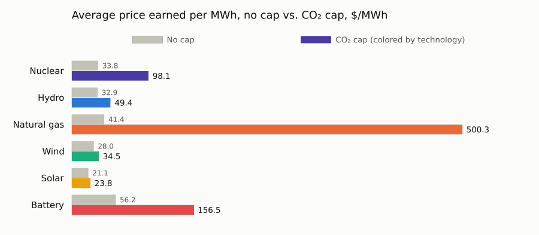
How to read this case
This is a stylized end state for showing what Macro can do, not a forecast.
| Simplification | What it means | To relax it |
|---|---|---|
| One planning step | The system is rebuilt in a single period, with no limits on how fast capacity can be built or on land use. | "ExpansionHorizon": "Myopic" with several periods gives a pathway instead. |
| Fixed end-use demand | Electricity (~2,360 TWh/yr) and the demand for gasoline, diesel, jet fuel and gas stay close to today's levels, with no electrification of transport or heat. All of the decarbonization falls on the supply side and on negative emissions. | Edit the demand time series in system/. |
| Existing pumped hydro only | Pumped-hydro plants keep their current power and 15.5 hours of storage (the default PowerGenome uses for existing plants); no new pumped hydro is built. | Edit assets/electricity_stor.csv. |
| Three representative weeks | Storage and renewable adequacy are only tested against 504 hours. | Swap in full-year time series and a matching system/time_data.json. |
| A very high carbon price (section 5) | USD 1,000/t is several times common estimates of the social cost of carbon. | Lower CO2_PENALTY (e.g. to 200). |
Where to go next
All of these are keys in settings/case_settings.json (this case doesn't ship one, so it runs on the defaults), except the last row.
| To… | Use |
|---|---|
| Decompose planning from operations | "SolutionAlgorithm": "Benders"; subproblems can run in parallel (Distributed) |
| Plan over several periods | "ExpansionHorizon": "Myopic" solves one period at a time and carries capacity forward; PerfectForesight optimizes all periods jointly |
| Get full-year outputs | "WriteFullTimeseries": true expands representative-week results to all 8,760 hours |
| Improve conditioning | "ParameterScaling": true rescales costs and quantities before the solve and undoes it in the outputs |
| Add your own technologies | put asset definitions in user_additions/ inside the case folder, and they're loaded with the case. No package changes needed. |